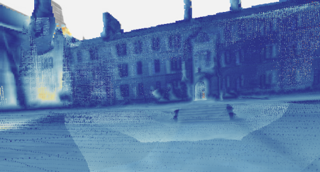
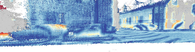
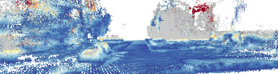
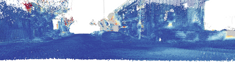
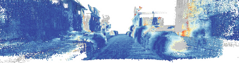
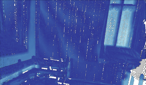
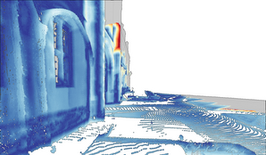
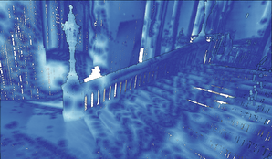
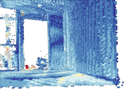
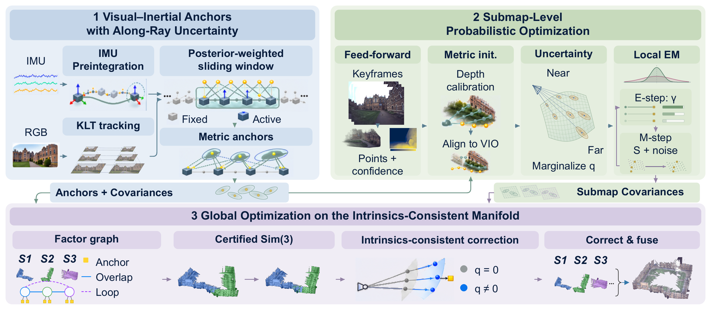

Sim(3)
7 DoFAlong each ray · one shared scale
z′ = sz · pose alignedThe full model has rotation, translation and scale. After pose alignment, every depth is multiplied by the same s. Points stay on their rays, but the depth-dependent bias remains.
Replay real sequences: camera images and inertial signals alongside a growing 3D map.
Loading recorded IMU…
Loading sequence replays…
Reconstruction replay from recorded keyframes, with the final ProManO calibration applied. Points appear in capture order; the input camera, trajectory and IMU share the same timeline. Each sequence is accelerated to 20 seconds.
One global scale cannot fix a distortion that changes with depth.
Sim(3) moves and rescales the whole scene. A full SL(4) projective model adds freedom that can also change camera calibration. ProManO keeps the three extra depth modes compatible with the calibrated camera, using metric visual–inertial anchors to resolve them.
Upgrading feed-forward geometry to metric scale with visual-inertial odometry raises the question of which correction should align dense predictions with sparse metric anchors. The transformations compatible with pre-calibrated intrinsics form a ten-dimensional manifold. Beyond Sim(3), three degrees of freedom locate the plane at infinity. They are invisible in image projections and require metric depth along rays or multi-view constraints to resolve. ProManO estimates the correction using along-ray uncertainty and inlier probabilities in an expectation-maximization procedure. It certifies the similarity synchronization and refines the plane at infinity where it is observable. Experiments on EuRoC, CID-SIMS, Oxford Spires and KITTI-360 show higher mean reconstruction F₁ than Sim(3) alignment on all four datasets.
After pose alignment, compare the depth correction in the same reference camera.
Along each ray · one shared scale
z′ = sz · pose alignedThe full model has rotation, translation and scale. After pose alignment, every depth is multiplied by the same s. Points stay on their rays, but the depth-dependent bias remains.
Full projective freedom
X̃′ ∝ HX̃Includes five calibration modes beyond the fixed-intrinsics family. Known camera intrinsics are not enforced.
Along each ray · depth-dependent correction
z′ = sz / (1 + zqᵀb)After pose alignment, the multiplier is s / (1 + zqᵀb), so it can vary with depth and viewing direction. Three shared q parameters add this freedom while K stays fixed.
In a camera’s normalized coordinates, b = (x, y, 1) and inverse depth ρ = 1/z. Before the common similarity scale, the extra ray correction is ρ_corr = ρ + qᵀb. After that scale, the pose-aligned depth is z′ = sz / (1 + zqᵀb). The coefficient q₃ shifts inverse depth; q₁ and q₂ tilt that shift across the image. The ProManO drawing illustrates the q₃ mode with s = 1. It changes distance along a ray without moving its pixel.
The 10D family is defined for one calibrated reference camera. In ProManO, a submap shares the similarity and q coefficients, while q acts about each frame’s own optical center. Metric depth and other viewpoints constrain these modes; the system refines them only where observable.
9 comparisons
Drag to compare the same view. Blue indicates lower error and red higher; use the local scale on each card.
The Oxford façade is available with Sim(3) only.
In the region close-ups, gray marks ground-truth surface missed by all three methods. In the façade, gray is LiDAR ground truth.
9 comparisons. Left: Ours w/ Sim(3). Right: ProManO.










A sliding-window visual–inertial frontend estimates metric 3D points, their along-ray covariances and inlier priors.
Each dense submap is aligned to the anchors by EM. Marginalizing the plane-at-infinity parameter accounts for uncertainty during this local update.
Anchor, overlap and loop factors connect the submaps. The backend certifies the similarity update and refines the plane at infinity where the data constrain it.
Drag to orbit. Scroll or pinch to zoom.
Reconstruction quality across four datasets, followed by a controlled comparison across four feed-forward geometry predictors.
Paper-reported dataset means. Our three mapping variants use DA3-Nested with the same visual–inertial frontend trajectory.
All charts use a fixed 0–100 F₁ scale. Evaluation uses Sim(3) alignment for VO methods and SE(3) for VIO methods, following the paper’s protocol. This evaluation alignment is separate from the mapping backend name. × indicates at least one tracking failure in the dataset; — indicates a result not reported. Neither is a zero score.
Change the dataset to compare the same-predictor Sim(3) variant and ProManO for each geometry model.
EuRoC · mean F₁ (%) @ 5 cm · higher is better
Table 4 · keyframes, VIO trajectories, loop closures, submap partition, anchors, solver and evaluation protocol are held fixed. Gains are percentage points, calculated from the reported two-decimal means. Changing this dataset view does not change the default DA3-Nested system results above.